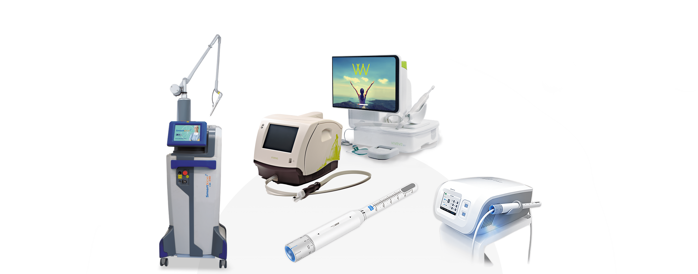
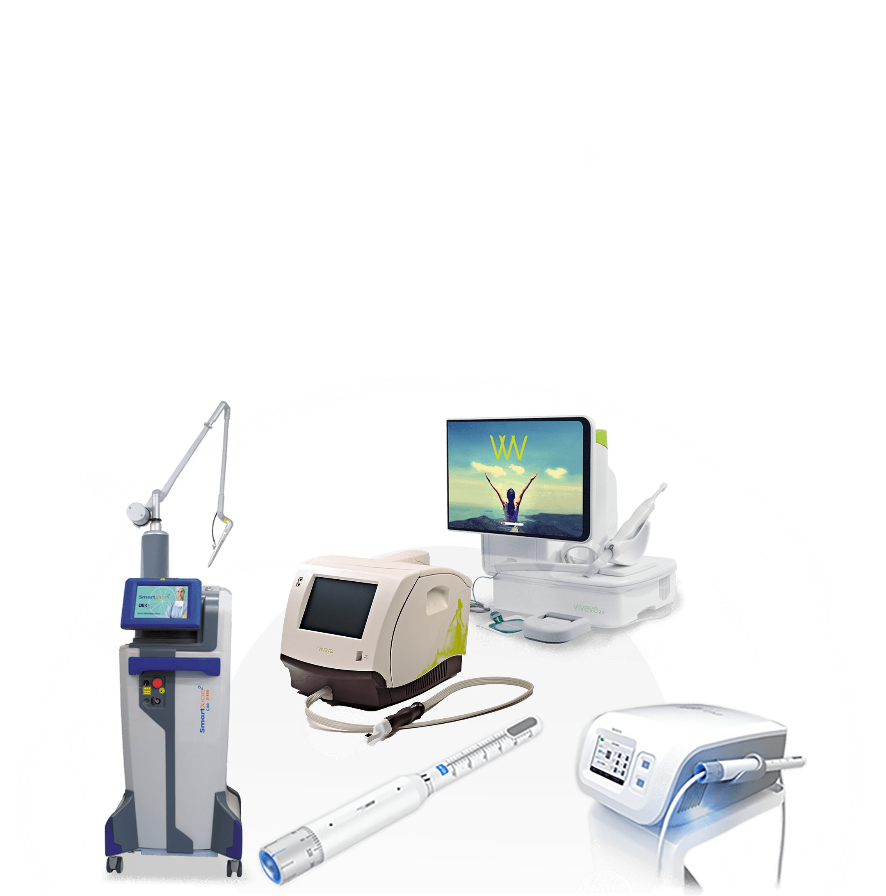
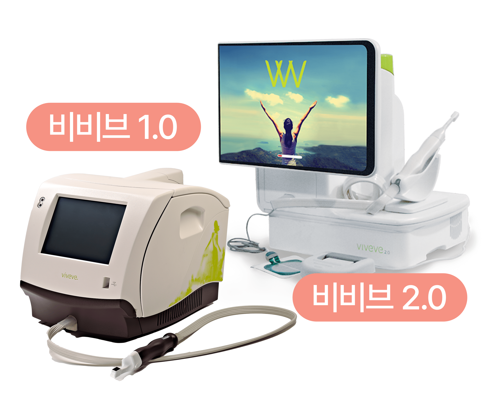
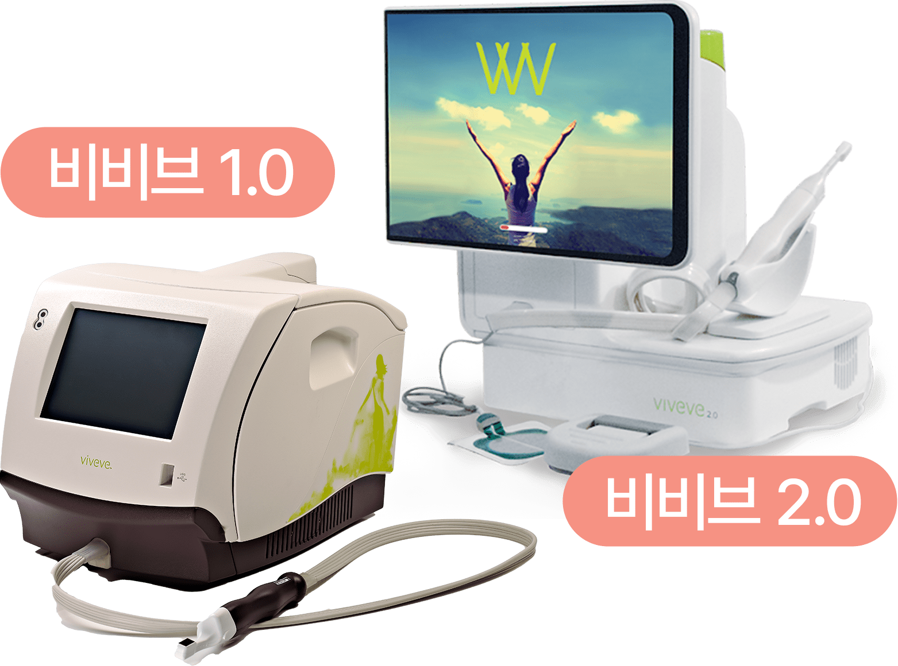

나를 위한
질 타이트닝 프로그램
나를위한 산부인과의
“레이저 질 타이트닝 프로그램”
은
수술없이 간단하게
정확한 질압측정 데이터를 기반으로 환자별
최적화를 통해 타이트닝 효과를 극대화 시키는 1:1 맞춤 시술 입니다
나를위한 산부인과는 시술의 효과와 안전을 위해
정품
기기와 소모품을 사용합니다.


비비브란?


비비브
비비드는 피부 리프팅 레이저 장비로 잘 알려진
써마지 기술로 만들어진 질 이완증 치료 장비입니다.
열에너지를 이용해 질 내부 콜라겐 생성을 촉진시켜
단 1회만으로도 질 벽의 쿠션감을 생성
하고
늘어진 근육을 당겨줍니다.
또한 클리토리스와 바로 연결되어 있는질 안쪽 입구
조직에
시술하여 원활한 혈액 순환을 촉진하고
클리토리스를 자극해 마찰감을 향상하고
전 세계에서
성감 증대 효과를 인정받고 있는
시술
입니다.
질쎄라란?


인체에 무해한 집속 초음파(HIFU) 에너지를 조직 내에 조사하여
집중된 에너지 피부 표면을
거의 손상시키지 않고 적정 깊이로
초음파 에너지를 전달하여 콜라겐 합성을 촉진
하여
섬유 근육층의 수축을 발생시켜 질 내부가 타이트닝 되며
두꺼워지도록 도와줍니다.
질 점막 탄력성도 증가시키는 효과
를 얻을 수 있습니다.
모나리자 터치란?

CO2 FRACTIONAL 레이저가 360도 회전하면
질 점막을 자극해 콜라겐을
포함한 여러 가지
물질들이 재합성 하도록 유도하는 원리입니다.
민감한 부위 절개 후 전체에
레이저를 조사하여 미백 및 재생을 도와줍니다.
마취가 필요 없을 정도로
통증이 거의 없는 간단한 레이저 시술입니다.
-
공식기관의 인증을 받은
뛰어난 안정성
유럽 CE마크 획득,
KRDA로부터 한국 최초로
허가 받은 레이저입니다 -
빠른 회복
빠른 일상생활 복귀
10분에서 15분 정도면
시술을 마치고
일상생활이 가능합니다
질 타이트닝 프로그램 대상자
-
바람 빠지는 소리가 자주 나서
민망한 경험을 하는 경우 -
성감저하로 부부관계가
원만하지 않은 경우 -
간단한 시술로
만족감을 상승시키고 싶은 경우 -
질 건조증과 냄새를
같이 해결하고 싶은 경우 -
대음순 피부 탄력이
저하되어 변형된 경우 -
질 이완으로
불편함을 겪는 경우 -
만성 질염으로 고생하고
자꾸 재발하는 경우 -
음핵 주위의 노화가 진행되었거나
성감이 저하되는 경우
질 타이트닝은 왜
나를위한 산부인과?


-
풍부한 시술 경험의
산부인과 전문의
직접 시술 -
미용적 측면과
기능적 측면까지
함께 고려한 맞춤 시술 -
남모를 고민을
디테일한
부분까지
상담 후
종합적으로 분석 -
상황과 상태에 따른
1대 1 맞춤
질타이트닝 프로그램
질 이완 진단기
를 통한
질압측정

나를위한 산부인과에서는 비비브 질타이트닝,
질 축소술, 질 필러 시술 등에 질압측정을 통한
비교 데이터를 제공해 드리고 있습니다.

프라이빗한 휴식 과 회복
나를위한산부인과에서는 치료를 받는
환자분들이
긴장을 완화하고 편안한
마음으로 쉬실 수 있도록
고급스럽고
편안한 분위기의 1인 회복실을 제공합니다.
레이저 질 타이트닝
시술 후 주의사항
시술 후 주의 사항은 개인 차가 있을 수 있습니다.
-
01
시술 직후 요도 및 점막 조직 자극으로 인한 빈뇨 증상이 일시적으로
생길 수 있습니다.
1주일 내로 자연스럽게 사라지는 증상이오니
걱정하지 마세요. -
02
시술 후 통증이 거의 없어 바로 일상생활이 가능하며, 운동도
제한 없이 하실 수 있습니다. -
03
성관계는 시술 후 바로 가능하지만, 하복부 불편감 혹은 소량의
출혈이 발생할 경우 3일 정도 관계를 피해주세요. -
04
시술 당일 사워, 탕 목욕 및 사우나는 바로 가능입니다.
-
05
점막의 위축이 심할 경우 시술 후 소량의 출혈이 생길 수 있으며,
이러한 증상이 있을 시 본원으로 연락 후
바로 내원하시어 경과를
보시기를 권장 드립니다. -
06
시술 후 음주, 흡연은 시술 결과에 악영향을 끼칠 수 있으니
피해주세요. -
07
시술 후 1주일간 탐폰, 음주, 탕 목욕, 자전거 운동과 같이 시술 부위를
자극할 수 있는 행위는 피해주시고
흡연과 음주는 안정적인 필러
안착을 위해 삼가해주세요.